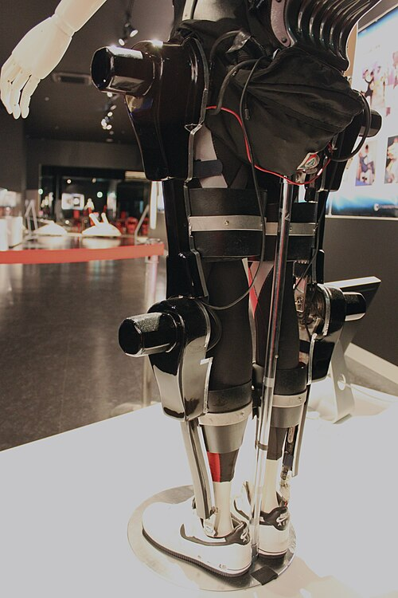

Экзоскелет — это специальное внешнее устройство, которое надевается на тело человека и помогает ему выполнять различные движения. Он может поддерживать руки, ноги, спину и другие части тела. В зависимости от конструкции экзоскелет может быть механическим или оснащённым электронными системами и электродвигателями. Современные экзоскелеты разрабатываются для разных целей. Некоторые модели помогают поднимать тяжёлые предметы, другие облегчают ходьбу или поддерживают мышцы во время движения. Такие устройства используются в медицине, промышленности, научных исследованиях и других областях. Главная задача экзоскелета — расширить физические возможности человека или облегчить выполнение определённых движений. Благодаря развитию технологий эти устройства становятся более удобными, лёгкими и функциональными.
Одно из главных направлений применения экзоскелетов — промышленность. На заводах, складах и строительных площадках они могут помогать работникам выполнять физически сложные задачи. Например, некоторые модели поддерживают спину и руки при подъёме грузов или длительной работе в неудобном положении. Экзоскелеты также применяются в медицине и реабилитации. С их помощью специалисты помогают пациентам восстанавливать двигательные навыки после травм, инсульта и некоторых заболеваний. Во время занятий устройство поддерживает движения конечностей и позволяет повторять необходимые упражнения. Кроме того, экзоскелеты исследуются для использования в космонавтике, спасательных операциях и военной сфере. В будущем такие технологии могут найти ещё больше применений, помогая людям выполнять сложные задачи и снижать физическую нагрузку.
Работа экзоскелета зависит от его конструкции и назначения. В простых механических моделях используются рычаги, пружины и другие элементы, которые перераспределяют нагрузку и поддерживают тело. Такие устройства могут работать без аккумуляторов и электродвигателей. Более сложные экзоскелеты оснащаются датчиками, электродвигателями и электронными системами управления. Датчики определяют положение тела, направление движения или усилие мышц. Затем система обрабатывает полученные данные и помогает устройству выполнять нужное движение. Для работы активных экзоскелетов часто используются аккумуляторы. Они обеспечивают энергией двигатели, которые помогают сгибать и разгибать суставы. При этом устройство должно учитывать движения пользователя, чтобы поддержка была своевременной и не мешала естественным действиям.
Экзоскелеты могут значительно расширить возможности людей с нарушениями двигательных функций. Например, некоторые модели предназначены для людей с повреждениями спинного мозга, которые испытывают трудности с самостоятельной ходьбой. Устройство поддерживает ноги и помогает выполнять последовательные шаги с использованием специальных систем управления и опоры. В реабилитационных центрах экзоскелеты применяются для тренировки движений. Повторение шагов и других двигательных действий помогает пациентам развивать координацию, тренировать мышцы и восстанавливать отдельные двигательные навыки. Программу занятий подбирают специалисты с учётом состояния и возможностей человека. Экзоскелеты также могут помогать людям, которым трудно двигать руками или удерживать определённые положения тела. Такие устройства способны поддерживать конечности и облегчать выполнение повседневных задач. Однако они подходят не всем и не гарантируют полного восстановления способности ходить или двигаться. Их использование требует профессионального подбора, настройки и обучения. В целом экзоскелеты являются важным достижением современной инженерии и медицины. Они помогают преодолевать некоторые физические ограничения, повышают самостоятельность людей и открывают новые возможности для реабилитации. По мере развития технологий эти устройства могут стать ещё доступнее и эффективнее.
| Параграфы | |
| Параграф 1 | |
| Параграф 2 | |
| Параграф 3 | |
| Параграф 4 | |